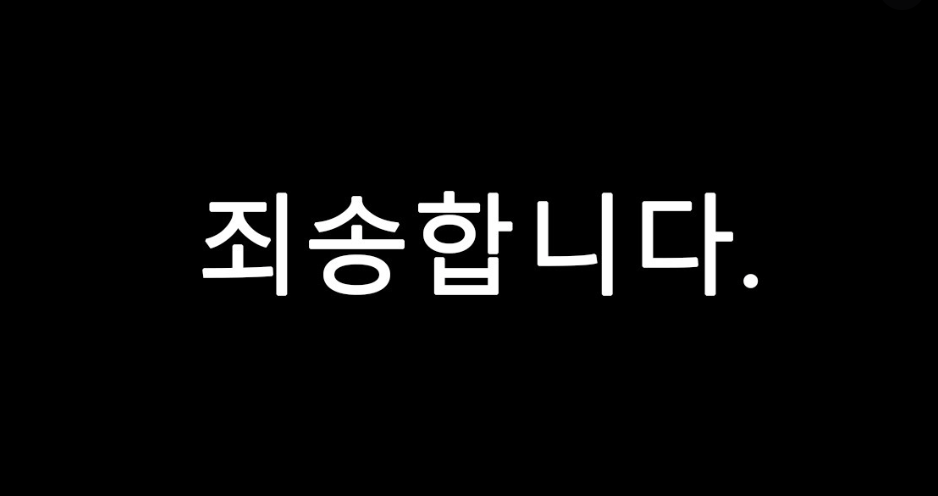
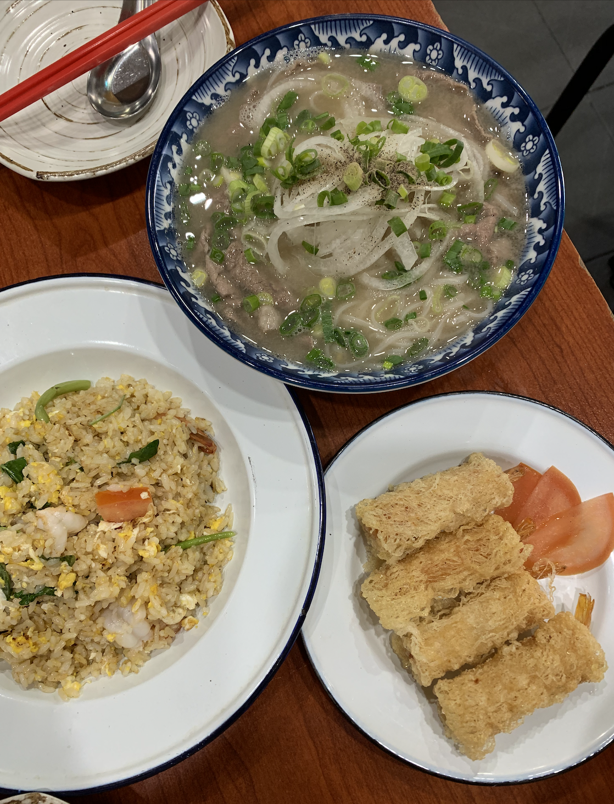
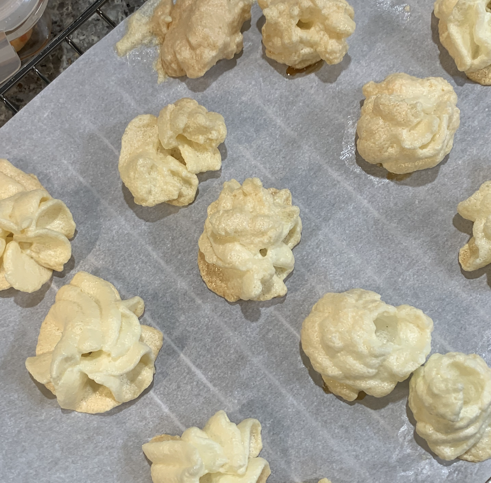
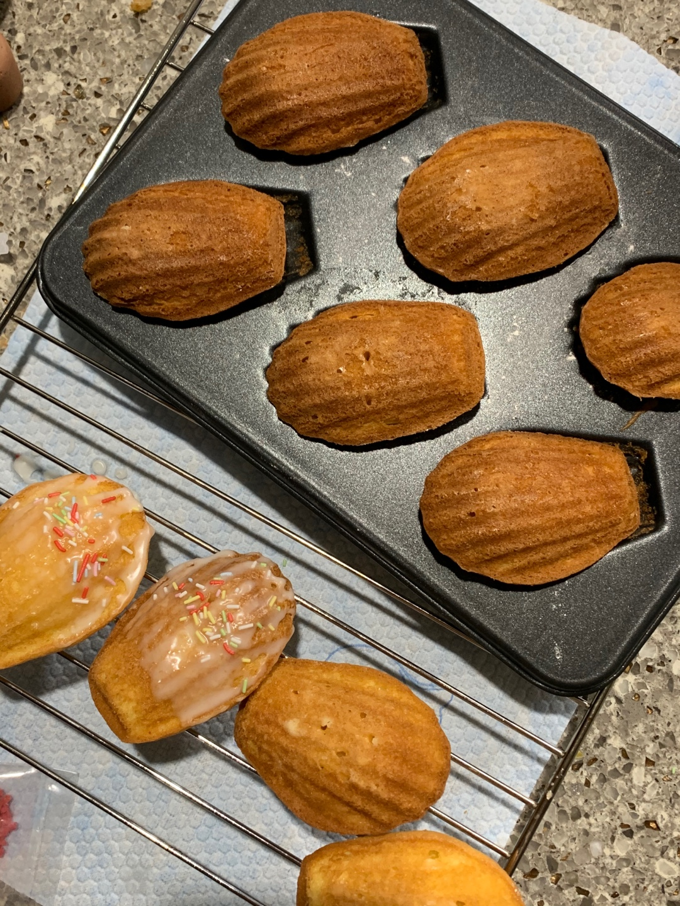
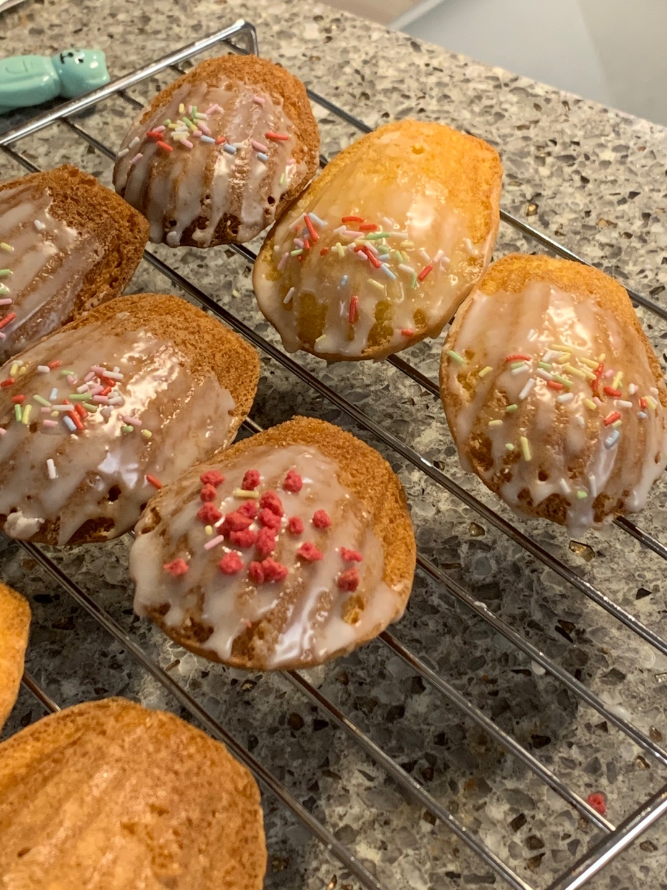
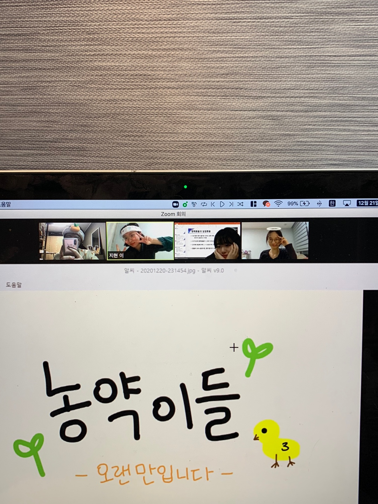
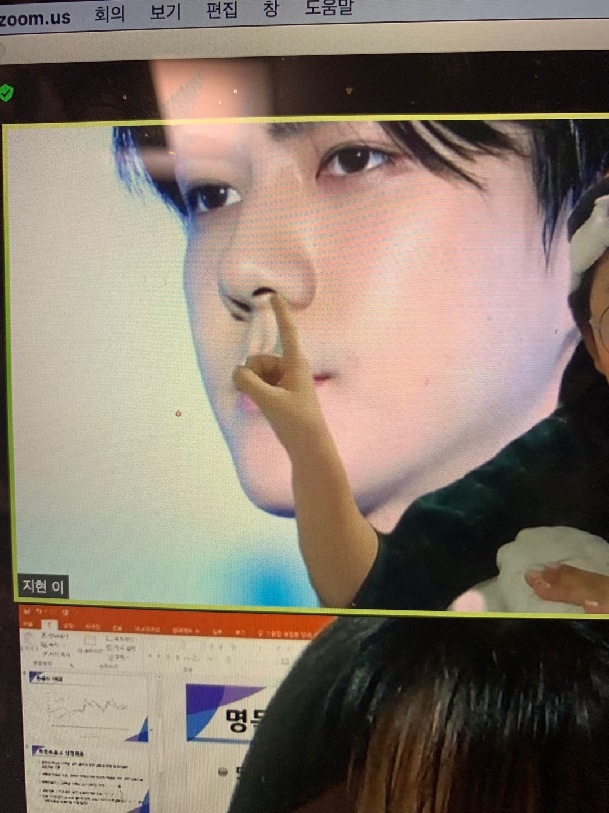
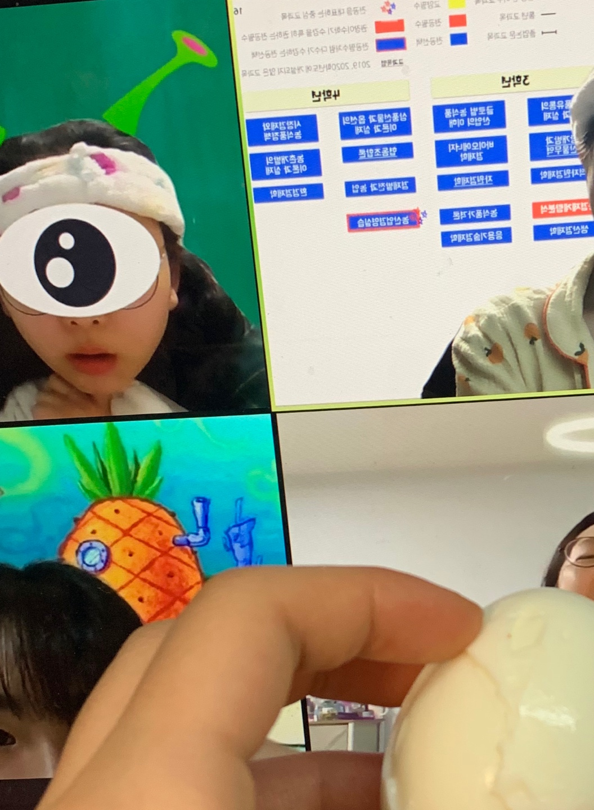

<!doctype html>
<html>
<head>
  <meta charset="utf-8">
  <title> Daily Activity Report</title>
  <link rel="stylesheet" href="style_edit.css">
  <link rel="preconnect" href="https://fonts.gstatic.com">
  <link href="https://fonts.googleapis.com/css2?family=Baloo+2:wght@400;500;600;700;800&family=Gaegu:wght@300;400;700&family=Staatliches&display=swap" rel="stylesheet">
  <style>
  img {
    width:40%;
    padding-left:5%;
    padding-right:5%;
  }
  #죄송합니다 {
    width:100%;
  }
  .줌종파{
    width:30%;
    padding-right:0
  }
  @media only screen and (max-width: 600px) {
    img{
      float:none;
      width:80%
    }
  }

  </style>
</head>

<body>
  <a href="index.html"><H1>Daily Activity Report</H1></a>
  <div class="menu">
    <a href="1.html">Timeline</a>
    <a href="2.html">Task List</a>
    <a href="3.html">Archive</a>
  </div>
  <div class="content">
      <H2>Timeline</H2><br><br>
        <br><p>죄송합니다만 오늘은 시간을 하나하나 기록하지 못해서 일과만 보고드리겠습니다 죄송합니다 흑,,
          <br>
        <br><p><div class="timestamp">허세님과 아점 약속</div>
          <p>
          
          <br> 아무리 봐도 허세님이 더 잘 만들었는데 자꾸 기만이라고 뭐라한다 새우스프링롤이 진짜 맛있었다</p></p>
        <br><p><div class="timestamp">뒹굴뒹굴 핸드폰</div></p>
        <br><p><div class="timestamp">머랭 쿠키 만들어 먹기</div></p>
        <p>
          <br>졸려서 좀 자려고 했는데 언니가 예은 베이커리 오늘 영업 안하냐구 그래서 (미끼 던지면 덥썩 무는 편) 바로 일어나서 머랭 쿠키 만들었지다 근데 처음 만들었을 때보다 못 만들었다 초심자의 운이었나봐..</p>
        <br><p><div class="timestamp">마들렌 만들기</div>
          <br> 머랭쿠키 만들고 설거지 하려는데 싱크대 옆에 있는 마들렌 틀 발견 !! 아침에 반쯤 깨서 비몽사몽 할 때 엄마가 달달한 거 땡긴다고 하던 게 떠올라서 내 돈 주고 사먹을 일 없는 마들렌 만들기로 결심했다 후후,,
        <br> 근데 마들렌이 반죽 만들고 2시간 휴지를 해야되더라구 그래서 반죽 냉장고에 넣어놓고 침대에 누웠는데..</p>
        <br><p><div class="timestamp">개꿀잠 잤다ㅎㅎㅎㅎㅎ</div>
          <br> 진짜 하마터면 허세님한테 옐로카드 받을 뻔ㅎ</p>
        <br><p><div class="timestamp">스타트업 관련해서 줌으로 회의했다!</div>
        <br> 아 그런데 안 하기로 했다 이제와서 빼기 조금 눈치보였는데 먼저 선택권을 줘서 흔쾌히 하차하기로 결정</p>
        <br><p><div class="timestamp">마들렌 굽고 데코</div>
          <p></p>
          <br> 생각보다 너무너무너무 잘 구워져서 깜짝 놀랐다 처음 한 입 먹었을 때는 좀 푸석푸석 해서 실망했는데 다시 먹어보니까 너무 맛있는데?????
          <br> 정신 차려보니 하나 다 먹었고 레몬 아이싱 뿌려서 또 먹었는데 정신 차려보니 또 다먹었더라구..ㅋㅋㅋㅋㅋㅋ 어떡하지 나 진짜 재능있나봐 어떡해????? 제빵왕 변탁구 </p>
        <br><p><div class="timestamp">핸드폰 만지면서 뒹굴뒹굴</div></p>
        <br><p><div class="timestamp">오늘의 보고서 작성</div></p>
        <br><p><div class="timestamp">친구들이랑 줌 종강파티 </div>
          <br>
          <br><br>진짜 ㅋㅋㅋㅋㅋㅋㅋ 오랜만에 애들이랑 너무 재밌었어 ㅋㅋㅋㅋㅋ 먼저 줌방 만든 이지현이 우리 기다리면서 농약이들 그림 만들고 세안밴드 하고 있어서 나도 세안밴드 하구 (잠옷이랑 세트임)
          <br> 박정은이 바탕을 자기 바탕화면에 있던 준쿠리 피피티 캡처 사진으로 해가지구 다들 바탕 바꿨는데,
          <br> 이지현이 자기 바탕 오세훈으로 바꾸고 콧구멍 간지럽히는 거 보고 웃다가 쓰러질 뻔 ㅎㅎ;
          <br> 나는 배경 우리 전공 로드맵 피피티로 바꿨지렁 세번째 사진은 나 계란 먹는데 정세영이 아ㅏ하길래 먹여준 것!
          <br> 벌써 곧 스물둘이라니.... 삐약이 그려져 있는 그림 스토리에 올린 거 보고 20학번 후배가 'ㅎㅎ.. 삐약이 맞아?ㅋㅋ'하고 시비 걸었어 나참 ;;; 우리 아직 삐약이라고....</p>
        <p>이거슨 우리들의 스무살 여름 농약TV의 시초입니다! 구독자 애칭이 상추였나 그랬던 것 같아 우리가 해충으로부터 보호해준다 어쩌구저쩌구.. 물론 저거 찍고 그 이후로 한 번도 안 찍었지요
          <br><br><video width=70% controls>
                <source src="농약티비.mp4" type="video/mp4">
                Your browser does not support the video tag.
              </video></div>
          </p>
        <br><p><div class="timestamp"></div></p>

        <br><p><div class="timestamp"></div></p>
  </div>
</body>
